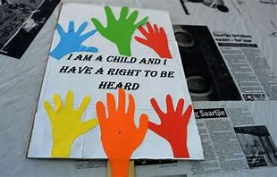

The true character of a society is revealed in how it treats its children
- Nelson Mandela

African children are exposed to various forms of physical and psychological violence. Sexual abuse and exploitation, neglect, and child labor are widespread. With urbanization, armed conflict, displacement, and globalization, they also face threats to their survival and wellbeing
Children everywhere are vulnerable to violence, abuse, and neglect. Between 500 million and 1.5 billion children worldwide endure some form of violence annually. Around the world, a hundred and sixty-eight million children are engaged in child labor, while 100 million live or work on the streets. In Africa, 50 percent of the child population is estimated to have experienced or witnessed some form of violence (physical, sexual, or emotional). The situation is even worse in conflict situations, where children experience several forms of human rights violations, especially sexual and gender-based violence such as rape, sexual slavery, and sexual mutilation
It is our individual and collective duty to protect African children from violence and to create an Africa that is safe for them, and where their dignity and freedom are protected and promoted.
Every child has the right to grow up free from harm and exploitation, yet countless children endure these horrors in silence. These acts are often committed by those entrusted to protect them—parents, caregivers, or other close individuals—through actions like fondling, penetration, sodomy, indecent exposure, or other exploitative behaviors.
We must stand united against all forms of child sexual abuse. Raising awareness, Recognize the signs, and reporting suspected abuse are critical steps toward protecting vulnerable children. It’s on all of us to break the silence, dismantle stigmas, and demand justice for survivors.
Click the button to learn something new
Approximately 5 children die every day due to child abuse.
Make a Difference Today
Help take action against child abuse. Every donation, big or small, brings us closer to ending this epidemic.